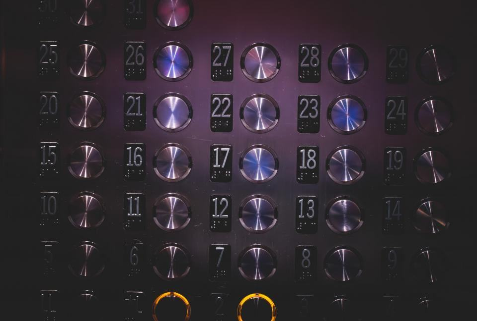
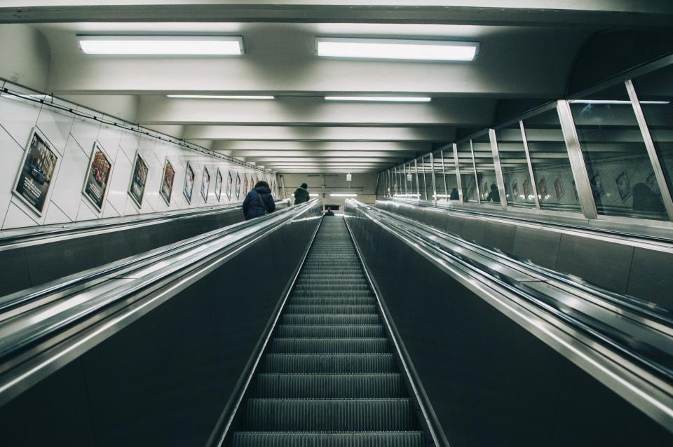
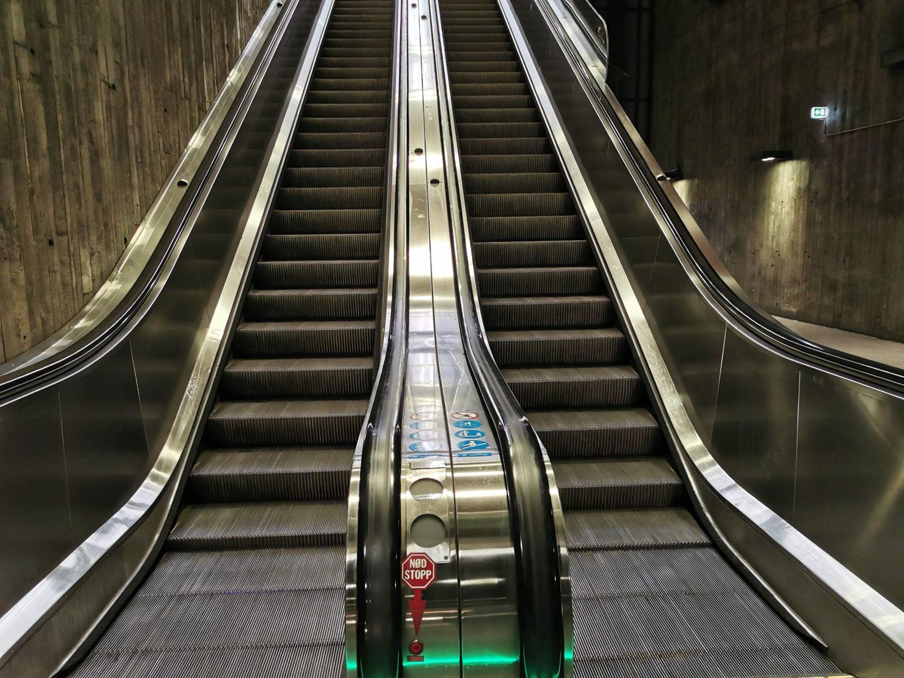
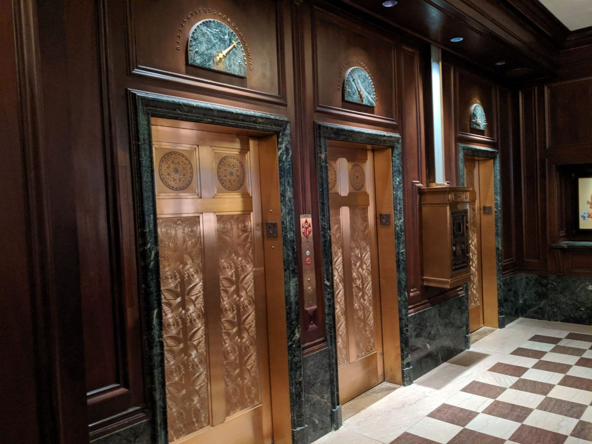

Scener, kor och klassrum
- Utfört

Varbergs Skolfastigheter
38 skolor inventerade och en åtgärdsplan med prioriteringar fram till 2030.
- Utfört

Kungsbacka Teatersalong
Lyfthöjd 1,2 meter bakom scenen, med tyst drift under föreställning.
- Utfört

Himledalens Församling
Plattformshiss i ek och stålplåt i en kyrka från 1100-talet.
- Utfört

Tvååkers Idrottshall
Plattformar till läktaren och till omklädningsrummen i källarplanet.
- Pågående

Ullareds Bibliotek
Personhiss mellan bibliotek och studierum, med dörröppnare vid entrén.
- Pågående

Hylte Badhus
Korrosionsskyddad plattform mellan entréplan och bassänghall.
Från mätband till plattform
 Steg 1 / 4
Steg 1 / 4Inventering på plats
Vi mäter och fotograferar alla hinder i lokalen tillsammans med fastighetsförvaltaren.
NästaÅtgärdsplan Steg 2 / 4
Steg 2 / 4Åtgärdsplan
Hindren sorteras i små, mellanstora och stora åtgärder, med kostnad och föreslaget år.
NästaAvrop eller anbud Steg 3 / 4
Steg 3 / 4Avrop eller anbud
Mindre åtgärder görs via ramavtal, och på större åtgärder lämnar vi anbud.
NästaMontage under lov Steg 4 / 4
Steg 4 / 4Montage under lov
I skolor monterar vi under loven och i kyrkor mellan förrättningarna.
Kontakta oss
Vilken lokal vill ni öppna?
Tillgänglighetsinventering
Genomgång av lokalen med mått, foton och åtgärdslista enligt Boverkets regler.
Läs merPlattform till scen
Vertikala plattformshissar för scener, läktare och halvplan.
Läs merHissar i skolor
Personhissar och plattformshissar i grundskolor och gymnasier.
Läs merKyrkor och kulturhus
Lösningar som går att förena med byggnadens kulturvärden.
Läs merIdrottshallar och bad
Utrustning som tål fukt, klor och hårt slitage.
Läs merAvrop på ramavtal
Service och mindre åtgärder direkt via kommunala ramavtal.
Läs merService och besiktning
Underhåll av plattformshissar och hissar i offentliga byggnader.
Läs merEnkelt avhjälpta hinder
Trösklar, dörrautomatik och kontrastmarkeringar som komplement till hissen.
Läs mer
Frågor om tillgänglighet och plattformshissar
Hittar du inte svaret? Ring eller mejla oss.
Vad är enkelt avhjälpta hinder?
Hinder i publika lokaler som enligt Boverkets regler ska åtgärdas när det är rimligt, till exempel höga trösklar, bristande kontrastmarkering eller tunga dörrar. I inventeringen skiljer vi dem från större åtgärder.
Hur stor nivåskillnad klarar en plattformshiss?
De vanligaste plattformshissarna klarar upp till tre meter, med eller utan schakt. Vid större höjder behövs ofta en personhiss.
Måste plattformshissar i offentliga lokaler besiktas?
Ja, de omfattas av återkommande besiktning av ackrediterat kontrollorgan. Vi förbereder hissen och är med när kontrollorganet kommer.
Kan vi avropa från ert ramavtal?
Har er kommun ramavtal med oss kan ni avropa service och mindre åtgärder direkt. Annars lämnar vi anbud eller offert.
Hur gör ni i skyddade byggnader?
Vi tar fram förslag som går att ta bort utan att skada byggnaden och lämnar dem till samråd med länsstyrelse eller stift innan något beställs.
Hur lång tid tar ett montage?
En plattformshiss utan schakt monteras på två till tre dagar. Med schakt och ombyggnad runt omkring räknar vi med två till fyra veckor.
- Uppföljning av hinder
Vi räknar hinder, inte löften
- Illustrationsbild

Varje lokal vi inventerar får ett antal registrerade hinder, och vi följer upp hur många som är åtgärdade efter ett och tre år. Statistiken redovisas till kommunerna och används i deras budgetarbete.
Läs om hur vi arbetar- 1 840hinder registrerade i Varbergs skolor
- 42 %åtgärdade efter två år
- 100 %av lokalerna följs upp efter tre år
Senaste från Nivå



01SS-EN 81-41
Plattformshissarna monteras och provas enligt standarden för vertikala plattformshissar.
 02
02Tillgänglighetsutbildning
Konsulterna är utbildade i tillgänglighetsinventering och Boverkets regler om tillgänglighet.
 03
03Upphandlade ramavtal
Ramavtal med tre kommuner i Halland för service och tillgänglighetsåtgärder.
 04
04Antikvarisk medverkan
Vi arbetar med antikvarie i kyrkor och byggnadsminnen från första skiss.

Vet ni hur många hinder som finns i era lokaler? Börja med att mäta dem.
Förvaltare och föreningar berättar
Inventeringen gav oss för första gången en lista att budgetera efter. Nu åtgärdar vi tio skolor om året.
Johan B.Varberg Plattformen i koret syns knappt, och stiftet godkände den efter andra samrådet.
Lisbeth O.Veddige Vår skådespelare kommer nu upp på scenen samma väg som alla andra. Det betyder mer än jag kan förklara.
Amanda K.Kungsbacka